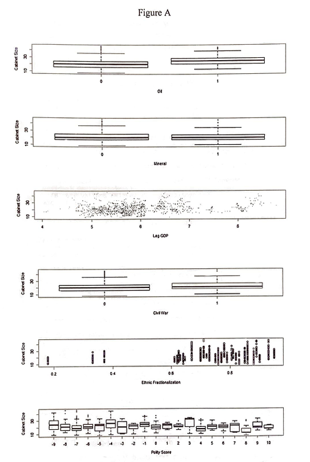
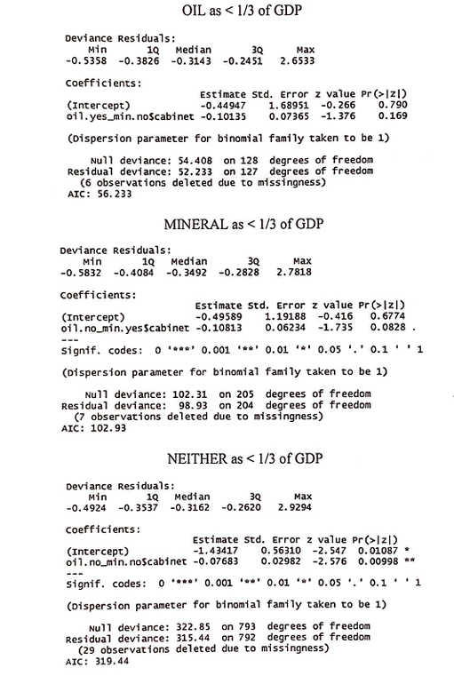
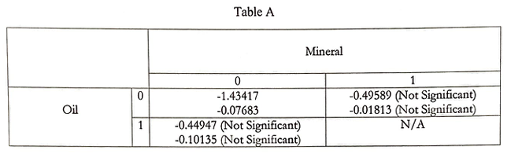
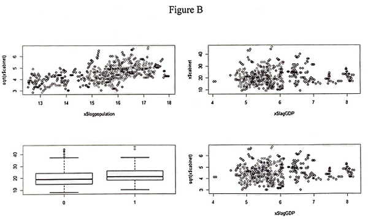
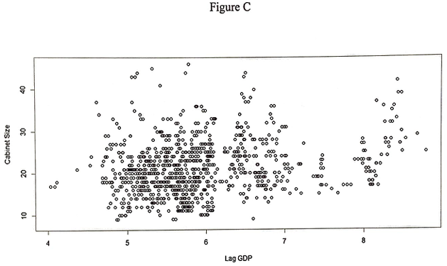
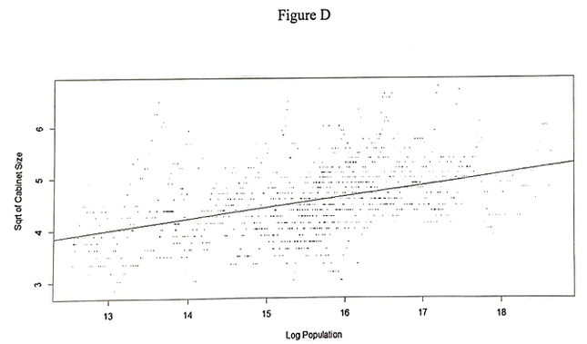

What's the Size of Your Cabinet?
A study on the cabinet size of African leaders and the resulting possibilities of their exile.
Summary
The primary objective of this statistical analysis was to determine the presence of a significant association between a cabinet size available to any given African leader and their possibility of forced exile. The dataset contained observations from 43 African countries and their leaders along with years of continuous leadership, available cabinet size for the given year, presence of civil war, polity score, presence of oil as over a third of GDP, presence of mineral as over a third of GDP, presence of ethnic fractionalization1, lag GDP, and log of population. The dataset was analyzed primarily through exploratory data analysis and linear regression methods, which suggested that there indeed is a significant relationship between available cabinet size and the likelihood of forceful exile. For countries that do not depend on oil or mineral as a major portion of their GDP, data suggests that for every additional cabinet position available, the likelihood of a leader's exile decreases.
1) ethnic fractionalization: individuals within a country belonging to many different cultural, linguistic, and/or religious groups.
Introduction
Attainment and maintenance of political power across the African continent are commonly linked to the prevalent use of patronage to sustain control over the state. Namely, this refers to the distribution of powerful and thus profitable cabinet positions to political allies and enemies as a form of appeasement. This hypothesis has been backed by African literature and statements from individuals formally directly linked to African leadership. However, until recently there were no sources of data that could contribute to the systemic statistical examination of the relationship between a leader's cabinet distribution and the likelihood of forceful exile of said leader.
For this study, a dataset spanning 43 different African countries from the 1970s to 2000s was collected. Data was collected for every year for each individual country and consists of years of continuous leadership [in number of years], available cabinet size for the given year, presence of civil war [binomial], polity score [range from -10 to 10, inclusive], presence of oil as over a third of GDP [binomial], presence of mineral as over a third of GDP [binomial], ethnic fractionalization [binomial], lag GDP, and log of population.
The primary object of this study is to determine the relationship between available cabinet size and the possibility of forced exile. The secondary objective is to determine what conditions generally lead to the expansion of cabinet size.
Approach and Results
To primarily observe the impact of other potentially significant variables on cabinet size, the relationship between available cabinet size and other variables was plotted (Figure A).
Based on the exploratory data analysis, some variables, the presence of civil war and the presence of minerals as a significant portion of GDP, do not appear to be significant enough. Others, ethnic fractionalization and polity score, are fractionalized into too many parts and hold no apparent pattern based on the data given. However, lag GDP and oil appear to hold some sort of relationship, significant or not. The findings suggest that further exploration is warranted for these variables.
The summaries below show the relationship between available cabinet size and the likelihood of exile in three different circumstances. 1) When oil contributes to more than a third of a country's GDP, 2) when mineral contributes to more than a third of a country's GDP, and 3) when neither does. No country had both oil and mineral impact their GDP significantly. Note that the correlation in observations is not accounted for, which may result in errors.
The table below (Table A) shows the coefficients of the summaries. While it exists, the relationship between available cabinet positions and the likelihood of exile only holds significance when neither oil nor mineral is responsible for more than a third of the country's GDP.
The plot below (Figure B) shows the trend of the relationship between the square root of available cabinet size and the log of the population (upper left), the available cabinet size and lag GDP (upper right), the available cabinet size and the presence of civil war (lower left), and the square root of available cabinet size and lag GDP (lower right).
The plot below (Figure C), the introductory plot of the relationship between available cabinet size and lag GDP shows a slight positive pattern as lag GDP increases. The positive pattern is clearer in the plot (Figure D) between the square root of available cabinet size and the log of population.
 As the demand for an increase in cabinet size will naturally increase as GDP and/or population increases, Figures B and C follow a logical pattern. It is worth noting that while this effect is observed, too many exceptions exist to establish it as a definite truth.
Conclusion
The hypothesis that political conflict and stability widely depends on the political distribution of cabinet positions is a critical axiom in political science. The purpose of this study was to determine the presence of a relationship between the availability of cabinet positions and the possibility of a given leader's exile. The results of this analysis show that there is a relationship between the cabinet size and likelihood of exile if the given country does not depend on oil or mineral as a major source of their GDP.
While the results of this study are promising, there are also minor concerns and future suggestions to further improve the analysis. First, it should be noted that the available cabinet positions do not fully reveal whether or not said positions were distributed, nor does it reveal how it was distributed. Secondly, a future dataset with more robust details should be analyzed for greater clarity on the impacts those variables hold on the overall dataset and cabinet size in particular. Thirdly, it is difficult to fully capture the instability of a leader's position based on a binomial condition of their exile. This is even more concerning considering that a leader's continued presence is not necessarily a good metric to measure the stability of a county. Finally, while oil and mineral are a good basis to determine the effect of cabinet size on overall rich and single-resource dependent countries, other resources that take up a significant portion of a country's GDP should be considered.